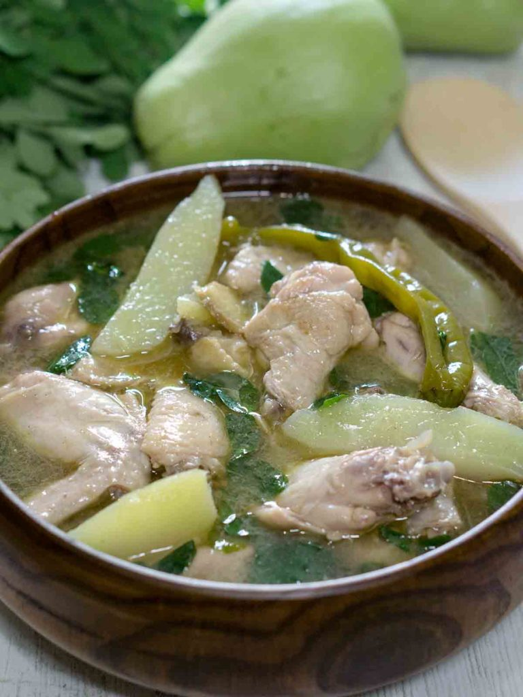

Tinola

Description
Tinola is a traditional Filipino soup dish that is typically made with chicken, green papaya, and chili leaves.
It is a light, savory soup that is often served with rice and is popular in many regions of the Philippines.
Ingredients
- chicken
- garlic
- onion
- ginger
- green papaya
- chili leaves
- water or chicken broth
Steps
This are the steps in making Tinola.
- Heat oil in a pot over medium heat. Sauté the ginger, onion, and garlic until fragrant.
- Add the chicken pieces and sauté for 2-3 minutes or until lightly browned.
- Pour in the water or chicken broth and bring to a boil. Skim off any impurities that rise to the surface.
- Lower the heat and let the soup simmer for 10-15 minutes or until the chicken is cooked.
- Add the green papaya and cook for 5-7 minutes or until tender.
- Season the soup with salt and pepper to taste.
- Add the chili leaves and let it cook for another 2-3 minutes.
- Serve hot with steamed rice on the side.